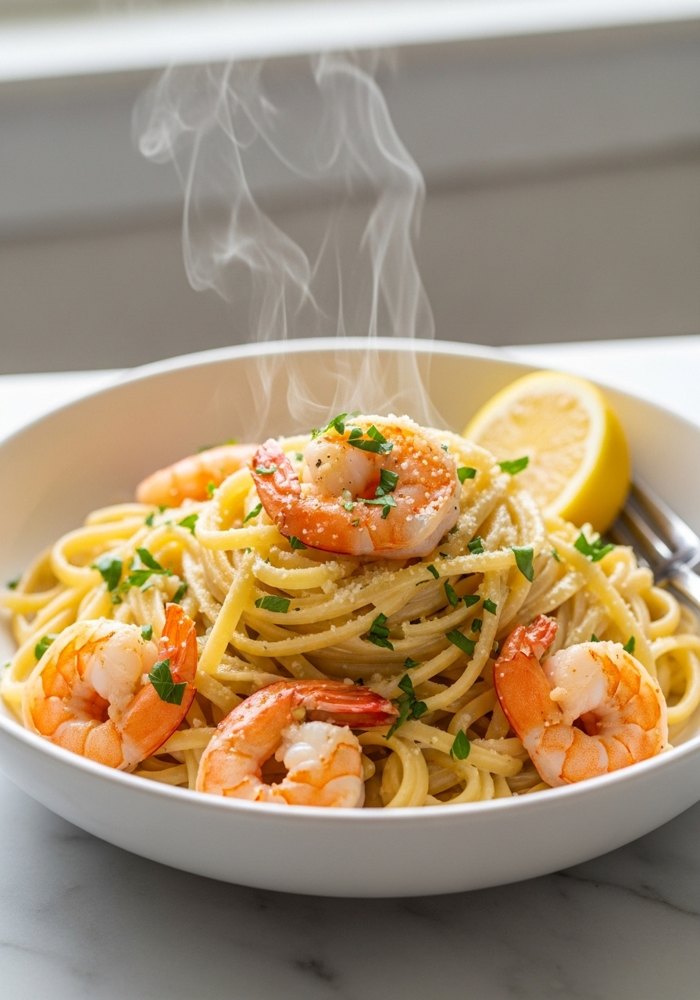
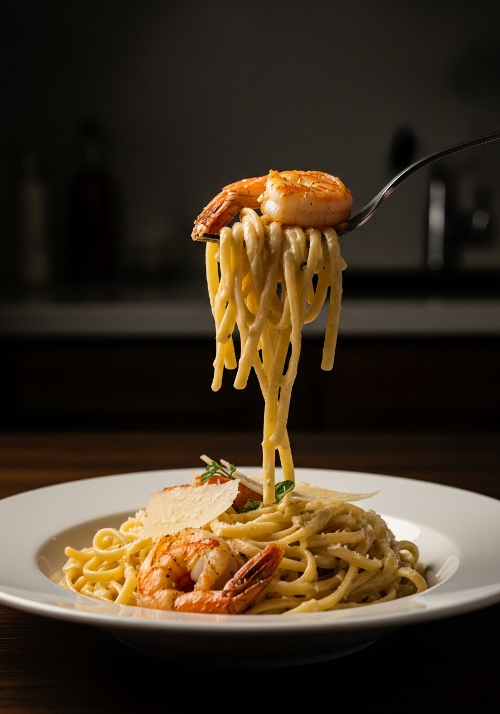

This is the pasta recipe you'll make on repeat. Juicy, perfectly seared shrimp cooked in a rich garlic butter parmesan cream sauce — restaurant-quality flavor with minimal effort, ready in just 25 minutes.
Save to Pinterest
25-Minute DinnerMost creamy pasta recipes either come out too heavy or too bland. This one hits the perfect balance: a silky sauce built on real butter, minced garlic, heavy cream, and freshly grated parmesan — not the kind from a can. The shrimp are seared separately at high heat so they stay plump and juicy instead of steaming into rubbery bites. Everything comes together in the same pan in under 30 minutes.
The secret that makes this taste like a restaurant dish? Reserved pasta water. The starchy water emulsifies the sauce, giving it that glossy, clingy texture that coats every strand of linguine. Don't skip it.
This recipe keeps things simple. You need large shrimp (fresh or frozen both work), linguine, butter, garlic, heavy cream, and parmesan. The pantry staples — red pepper flakes and Italian seasoning — add depth without effort. Fresh parsley and a squeeze of lemon at the end brighten the whole dish and cut through the richness.
For the pasta, linguine is the classic choice because its flat shape holds creamy sauces better than round spaghetti. Fettuccine is an excellent substitute. Whatever you choose, cook it al dente — it will finish cooking in the sauce and absorb more flavor that way.
Ingredients
Instructions

Store leftovers in an airtight container in the refrigerator for up to 2 days. Reheat gently on the stovetop over low heat with a splash of heavy cream or water to loosen the sauce. Avoid microwaving — the shrimp will turn rubbery and the cream sauce can separate.
This pasta does not freeze well due to the cream sauce and shrimp. It's best enjoyed fresh or the next day.
Spicy version: Double the red pepper flakes and add a pinch of cayenne to the sauce. Lemon garlic: Swap half the cream for white wine and add extra lemon zest. Vegetarian: Replace shrimp with sautéed mushrooms and asparagus — the sauce works beautifully with vegetables.
Yes! Frozen shrimp works perfectly. Thaw overnight in the fridge or under cold running water for 5 minutes. The most important step: pat them completely dry before cooking so they sear instead of steam.
Linguine and spaghetti are the classic choices — their shape holds the creamy sauce well. Fettuccine is an excellent alternative. Avoid short shapes like penne or rigatoni as they don't coat as evenly.
Yes. Swap butter for olive oil, heavy cream for full-fat coconut cream, and parmesan for nutritional yeast. The flavor will differ slightly but it still makes a delicious, rich pasta.
Refrigerate in an airtight container for up to 2 days. Reheat on the stovetop over low heat with a splash of cream. Do not microwave — shrimp become rubbery and the sauce can break.
Perfectly cooked shrimp are pink and curled into a C shape. If they curl into a tight O shape they're overcooked. Watch them closely — it only takes 1 to 2 minutes per side on medium-high heat.